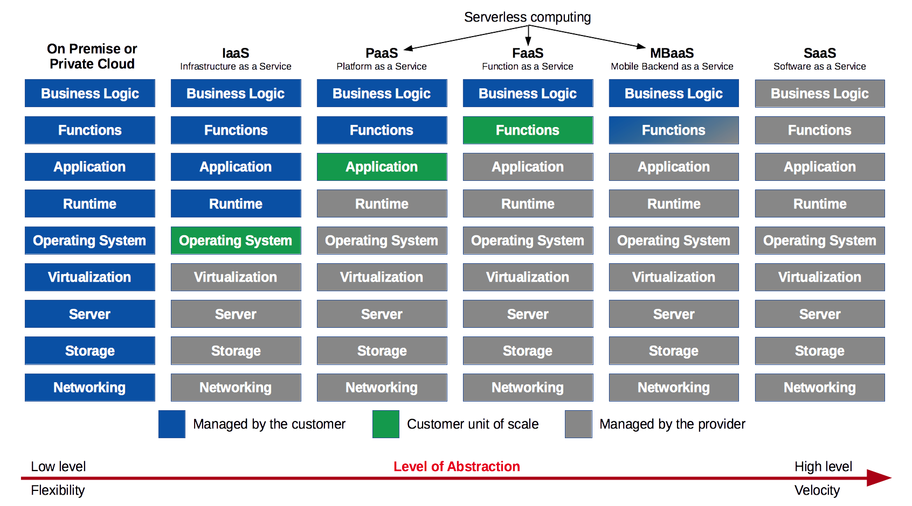

# Cloud Computing Learn what cloud computing is and about the common service models available today. This material is part of [web development courses](https://github.com/MediaComem/comem-webdev) for [Media Engineering](https://heig-vd.ch/formations/bachelor/filieres/ingenierie-des-medias). --- ## Client-server model .breadcrumbs[<a href="#1">Cloud Computing</a>] The [client-server model][client-server-model] is one of the main ways distributed and networked computer systems are organized today. In this model, **servers** share their resources with **clients**, who **request a server's content or services**. <p class='center'><img class='w65' src='images/client-server.jpg' /></p> > The communication is not only one way. > In modern web applications, servers may also **push data to their clients**. --- ### Types of servers .breadcrumbs[<a href="#1">Cloud Computing</a> > <a href="#2">Client-server model</a>] A server can provide many different kinds of content or services: * A [**file server**][file-server] provides shared disk access accessible over the network, to store files such as text, image, sound or video. * A [**database server**][db-server] houses an application that provides database services to other computer programs. * A [**web server**][web-server] can serve contents over the Internet. * An [**application server**][app-server] provides an environment to run web applications. <p class='center'> <img height='150px' src='images/file-server.png' /> <img height='150px' src='images/db-server.png' /> <img height='150px' src='images/web-server.png' /> <img height='150px' src='images/app-server.png' /> </p> These are just a few examples. There are many [types of servers][server-types] depending on the scenario and the resources you want to provide. --- ### [Internet hosting][internet-hosting] .breadcrumbs[<a href="#1">Cloud Computing</a> > <a href="#2">Client-server model</a>] Not every individual and organization has access to vast computer resources. Some companies provide Internet servers that can be owned or leased by clients. One common example is [web hosting][web-hosting], where server space is provided to make websites accessible over the Internet. .grid-33[ [**Managed/shared hosting**][shared-hosting] Multiple websites (from a few to a few hundred) are placed on the same server and **share a common pool of resources** (e.g. CPU, RAM). This is the simplest but least performant model. ] .grid-33[ [**Virtual hosting**][virtual-hosting] Using [virtualization][virtualization], physical server resources can be divided into **virtual servers**. Customers may have root access to their own virtual space. ] .grid-33[ [**Dedicated hosting**][dedicated-hosting] Customers get their own **physical server(s)** and gain full control over it. They are responsible for the security and maintenance of the servers. ] --- ### Cloud computing .breadcrumbs[<a href="#1">Cloud Computing</a> > <a href="#2">Client-server model</a>] .grid-30[ [Cloud computing][cloud] is nothing new. It's simply a **pool of configurable computer system resources**. These resources may be **servers**, or **infrastructure** for those servers (e.g. network, storage), or **applications** running on those servers (e.g. web applications). ] .grid-70[ <p class='center'><img class='w100' src='images/cloud.png' /></p> ] --- ### Why use cloud computing? .breadcrumbs[<a href="#1">Cloud Computing</a> > <a href="#2">Client-server model</a>] Cloud computing resources can be **rapidly provisioned** with **minimal management** effort, allowing great **economies of scale**. Companies using cloud computing can **focus on their core business** instead of expending resources on computer infrastructure and maintenance. .grid-50[ **Advantages** Pay-as-you-go models **minimize up-front computer infrastructure costs**. Allows to more rapidly **adjust to fluctuating and unpredictable computing demands**. ] .grid-50[ **Disadvantages** **Limited customization** options (since you do not have complete control over the infrastructure). **Security and privacy** can be a concern depending on a business's legal requirements. ] --- ## Deployment models .breadcrumbs[<a href="#1">Cloud Computing</a>] .grid-33[ **Private cloud** Cloud infrastructure operated solely **for a single organization**, managed and hosted internally or by a third party. These clouds are very capital-intensive (they require physical space, hardware, etc). **Providers:** Microsoft, IBM, Dell, VMWare, HP, Cisco, Red Hat. ] .grid-33[ **Public cloud** Cloud services **open for public use**, provided over the Internet. There is little to no technical difference between private and public clouds, but security considerations might differ. **Platforms:** [Amazon Web Services][aws], [Google Cloud Platform][google-cloud], [Microsoft Azure][azure]. ] .grid-33[ **Hybrid cloud** Composition of two or more clouds bound together to benefit from the advantages of multiple deployment models. For example, a platform may store sensitive data on a private cloud, but connect to other applications on a public cloud for greater flexibility. ] .container[ There also are a few [other deployment models][other-deployment-models], for example **distributed clouds** where computing power can be provided by volunteers donating the idle processing resources of their computers. ] --- ### Public clouds .breadcrumbs[<a href="#1">Cloud Computing</a> > <a href="#7">Deployment models</a>] Most public **cloud computing providers** such as Amazon, Google and Microsoft **own and operate the infrastructure** at their data center, and **provide cloud resources via the Internet**. For example, the Amazon Web Services cloud was [initially developed internally][aws-history] to support Amazon's retail trade. As their computing needs grew, they felt the need to build a computing infrastructure that was **completely standardized and automated**, and that would **rely extensively on web services** for storage and other computing needs. As that infrastructure grew, Amazon started **selling access to some of their services**, initially virtual servers, as well as a storage and a message queuing service. Today Amazon is one of the largest and most popular cloud services provider. --- ## Service models .breadcrumbs[<a href="#1">Cloud Computing</a>] Cloud computing providers offer their services according to different models. Model | Acronym | What is provided | Example :--- | :--- | :--- | :--- [Infrastructure as a Service][iaas] | **`IaaS`** | Virtual machines, servers, storage, load balancers, network, etc. | [Amazon Web Services][aws], [Google Cloud][google-cloud], [Microsoft Azure][azure] [Platform as a Service][paas] | **`PaaS`** | Execution runtime, database, web server, development tools, etc. | [Cloud Foundry][cloud-foundry], [Heroku][heroku], [OpenShift][openshift] [Function as a Service][faas] | **`FaaS`** | Event-based hosting of individual functions. | [AWS Lambda][aws-lambda], [Azure Functions][azure-functions], [Cloud Functions][cloud-functions] [Mobile Backend as a Service][mbaas] | **`MBaaS`** | Cloud storage, computing services and APIs for mobile applications. | [CloudBoost][cloudboost], [Firebase][firebase] [Software as a Service][saas] | **`SaaS`** | Web applications such as CRM, email, games, etc. | [Dropbox][dropbox], [Gmail][gmail], [Slack][slack] --- ### Infrastructure as a Service (IaaS) .breadcrumbs[<a href="#1">Cloud Computing</a> > <a href="#9">Service models</a>] **IaaS** provides fundamental IT infrastructure like **storage, networks and virtual machines** from their data center(s). The consumer provides an **operating system image**, for example [Ubuntu][ubuntu], which is run in a virtual machine by the provider. The consumer does not manage the physical infrastructure but has **complete control over the operating system** and can run **arbitrary software**. Setting up the runtime environment (databases, web servers, monitoring, etc) for applications is the responsibility of the consumer. --- ### Platform as a Service (PaaS) .breadcrumbs[<a href="#1">Cloud Computing</a> > <a href="#9">Service models</a>] **PaaS** provides a platform allowing consumers to run and manage applications without the complexity of building and maintaining the associated infrastructure. All the consumer has to do is provide the **application or software**, which the platform will automatically run on the standard runtime environment it provides. PaaS deployments are quicker because the consumer can simply deploy an application with minimal configuration, without worrying about the complexity of setting up a database or web server. More time can be spent on the development of the application itself. However PaaS is less flexible since control of the runtime environment and its configuration is limited. It also tends to be more expensive at larger scales. --- ### Function as a Service (FaaS) .breadcrumbs[<a href="#1">Cloud Computing</a> > <a href="#9">Service models</a>] **FaaS** provides a way to store individual functions and run them in response to events. Consumers can write simple and upload simple functions, and define in which circumstances they are used or combined to respond to requests. This model completely abstracts away both the complexity of building an infrastructure, and the complexity of developing and launching an application. The consumer has no direct need to manage resources. In contrast with IaaS and PaaS, nothing is kept running if nothing happens. Functions are loaded and run in milliseconds as events occur. Pricing is based on execution time rather than application uptime. The consumer has little to no control over the infrastructure, runtime and application layers. --- ### Mobile Backend as a Service (MBaas) .breadcrumbs[<a href="#1">Cloud Computing</a> > <a href="#9">Service models</a>] **MBaas** provides cloud storage and APIs to power web and mobile applications, with features such as user management, push notifications and integration with social networks. A working backend infrastructure is provided out of the box with this model. The consumer only has to use the provided cloud APIs in their frontend application, and may provide business logic to handle data access and events. This is one of the least flexible solutions as the consumer must use the specific components and services provided by the platform. It also produces the most vendor lock-in: it would be next to impossible to switch a mobile application from one MBaaS platform to another. --- ### Software as a Service (SaaS) .breadcrumbs[<a href="#1">Cloud Computing</a> > <a href="#9">Service models</a>] **SaaS** provides on-demand software over the Internet. The software is fully developed, managed and run by the provider, so the consumer has nothing to do except pay and use it. This model offers the least flexibility, as the consumer has no control over the operation or deployment of the software, and limited control over its configuration. --- ### Level of abstraction .breadcrumbs[<a href="#1">Cloud Computing</a> > <a href="#9">Service models</a>] These models can be ordered by increasing level of abstraction, from IaaS being the lowest level but most flexible service model, to SaaS being the highest level and fastest-to-use service model. <p class='center'></p> --- ## TODO .breadcrumbs[<a href="#1">Cloud Computing</a>] * Monolithic vs microservices vs FaaS * Public cloud: security and privacy * SOA, EaaS, https://en.wikipedia.org/wiki/Service-oriented_architecture * Service models: increasing abstraction & serverless computing * IaaS * CaaS * Serverless computing [app-server]: https://en.wikipedia.org/wiki/Application_server [aws]: https://aws.amazon.com/ [aws-history]: https://en.wikipedia.org/wiki/Amazon_Web_Services#History [aws-lambda]: https://aws.amazon.com/lambda/ [azure]: https://azure.microsoft.com/ [azure-functions]: https://azure.microsoft.com/en-us/services/functions/ [client-server-model]: https://en.wikipedia.org/wiki/Client%E2%80%93server_model [cloud]: https://en.wikipedia.org/wiki/Cloud_computing [cloudboost]: https://www.cloudboost.io/ [cloud-foundry]: https://www.cloudfoundry.org/ [cloud-functions]: https://cloud.google.com/functions/ [db-server]: https://en.wikipedia.org/wiki/Database_server [dedicated-hosting]: https://en.wikipedia.org/wiki/Dedicated_hosting_service [dropbox]: https://www.dropbox.com/ [faas]: https://en.wikipedia.org/wiki/Function_as_a_service [file-server]: https://en.wikipedia.org/wiki/File_server [firebase]: https://firebase.google.com/ [gmail]: https://www.google.com/gmail/ [google-cloud]: https://cloud.google.com/ [heroku]: https://www.heroku.com/ [iaas]: https://en.wikipedia.org/wiki/Infrastructure_as_a_service [internet-hosting]: https://en.wikipedia.org/wiki/Internet_hosting_service [mbaas]: https://en.wikipedia.org/wiki/Mobile_backend_as_a_service [openshift]: https://www.openshift.com/ [other-deployment-models]: https://en.wikipedia.org/wiki/Cloud_computing#Others [paas]: https://en.wikipedia.org/wiki/Platform_as_a_service [saas]: https://en.wikipedia.org/wiki/Software_as_a_service [server-types]: https://en.wikipedia.org/wiki/Server_(computing)#Purpose [shared-hosting]: https://en.wikipedia.org/wiki/Shared_web_hosting_service [slack]: https://slack.com/ [ubuntu]: https://www.ubuntu.com/ [virtual-hosting]: https://en.wikipedia.org/wiki/Virtual_private_server [virtualization]: https://en.wikipedia.org/wiki/Virtualization [web-hosting]: https://en.wikipedia.org/wiki/Web_hosting_service [web-server]: https://en.wikipedia.org/wiki/Web_server